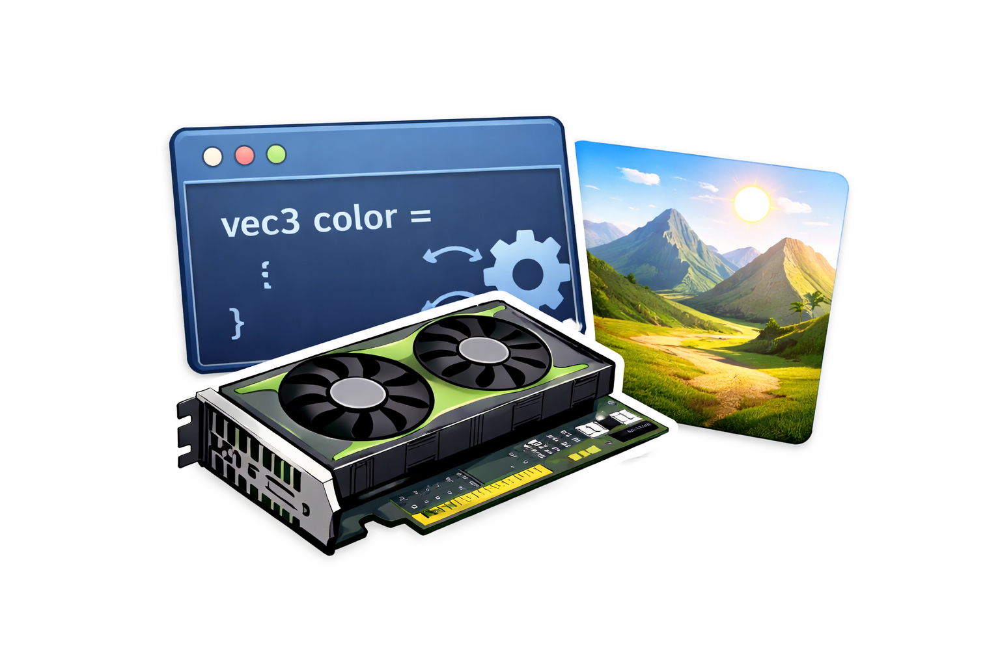

Vorbereitung: Einführung in Shader-Programmierung

Shader sind spezielle Programme, die auf Grafikprozessoren (GPUs) laufen und zur Berechnung von Bildpunkten (Pixeln) verwendet werden. Sie folgen dem Prinzip des parallelen Rechnens: Jeder Pixel wird unabhängig voneinander verarbeitet, wobei Berechnungsvorschriften angewendet werden, um Farbinformationen zu erzeugen. Diese Technologie bildet die Grundlage moderner Grafiksysteme in Computerspielen, Visualisierungen und interaktiven Anwendungen.
Externe Eingabewerte: Uniform-Variablen
Shader benötigen in der Regel Daten aus der Umgebung, um korrekt zu funktionieren. Solche Werte werden über Uniform-Variablen an das Programm übergeben. Diese sind konstant für alle Pixel und ermöglichen eine Interaktion zwischen dem Shader-Code und externen Parametern.
Beispiel: Bildauflösung
uniform vec2 u_resolution;vec2: Ein Vektor aus zwei komponentenweisen Werten (x, y), z.B.(800.0, 600.0)für ein Fenster mit Breite von 800 Pixeln und Höhe von 600 Pixeln.u_resolution: Ermöglicht die Skalierung von Koordinaten auf Basis der tatsächlichen Bildschirmauflösung.
Beispiel: Interaktive Parameter
uniform vec2 u_mouse;
uniform float u_time;- Mausposition (
u_mouse): Gibt die momentanen 2D-Koordinaten (x, y) der Maus innerhalb des Fensters an. - Zeitparameter (
u_time): Ermöglicht dynamische Effekte durch zeitabhängige Berechnungen. Der Wert entspricht den vergangenen Sekunden nach Start.
Ausführung eines Shader-Programms
Der Hauptteil eines Shader ist die Funktion main(), welche für jeden Bildpunkt separat ausgeführt wird:
void main() {
// ...
}Obwohl die main()-Funktion für jeden Pixel ausgeführt wird, läuft das Programm sehr schnell ab, da es auf einer GPU unter Nutzung vieler paralleler, spezialisierter Recheneinheiten (sog. Shader-Einheiten) ausgeführt wird. Eine Nvidia RTX 5090 GPU verfügt beispielsweise über \(21.760\) Shader-Einheiten.
Die Koordinaten jedes zu verarbeitenden Pixels werden der main()-Funktion durch die Variable gl_FragCoord übergeben (z.B. (0, 0) bis (800, 600)). Man kann in GLSL entweder auf die Koordinaten einzeln zugreifen gl_FragCoord.x bzw. gl_FragCoord.y oder auf beide gemeinsam gl_FragCoord.xy. Die Koordinaten werden hier - je nach gewünschter Form - durch unterschiedliche Datentypen repräsentiert (skalare bzw. vektorielle Typen).
Für die korrekte Darstellung werden die Pixelkoordinaten in GLSL in der Regel auf einen Wertebereich von [0, 1] skaliert. Dies ermöglicht eine einheitliche Verarbeitung unabhängig von der eingestellten Bildschirmauflösung und ermöglicht auch ein dynamisches Skalieren von bspw. Fentergrößen. Im folgenden wird beispielhaft gezeigt, wie eine Normalisierung der Koordinaten in GLSL durchgeführt werden kann:
void main() {
vec2 st = gl_FragCoord.xy / u_resolution.xy;
// ...
}In ähnlicher Art und Weise - wenn auch seltener genutzt - kann die Normalisierung auch individuell für jede Achse erfolgen. Ohne diese Anpassung wären z.B. kreisförmige Strukturen rechteckig verzerrt. Der folgende Code zeigt beispielhaft die Anpassung von Koordinaten zur Erhaltung von Seitenverhältnissen:
st.x *= u_resolution.x / u_resolution.y;Farbbestimmung
Die Zuordnung von Farbwerten (Rot-, Grün- und Blauwerte) erfolgt durch Zuweisung auf die Variable gl_FragColor. Dazu werden zunächst Rot-, Grün- und Blauwerte für jeden Pixel durch einen Vektor zusammengefasst. Im Folgenden sind ein paar Beispiele gegeben:
vec3 color = vec3(0.); // schwarz
vec3 color = vec3(1.); // weiß
vec3 color = vec3(0.5); // grau
vec3 color = vec3(0.201,1.000,0.380); // grün
Hinweis: Hier können die schon bekannten Mischungen für RGB-Werte angegeben werden. Der Wert 0. (siehe Bsp.) bedeutet, dass alle Kanäle deaktiviert sind. Der Wert 1. stellt die maximale Aktivierung dar. Wird nur ein Wert angegeben, so wird dieser automatisch für alle Kanäle gleichermaßen verwendet.
Dynamische Farbverläufe können wir mit dem folgenden Beispiel erzeugen:
color = vec3(st.x, st.y, abs(sin(u_time)));Rote und grüne Komponenten basieren hier auf den x- und y-Koordinaten des Pixels. Die horizontale Position bestimmt den Rotwert (st.x), die vertikale Position den Grünwert (st.y). Der Blaukanal wird durch sin(u_time) berechnet, wodurch eine periodische Wellenform entsteht (Periode: \(2\pi\)). Die Funktion abs(...) sorgt dafür, dass der Wertebereich auf [0, 1] beschränkt bleibt.
Die festgelegte bzw. berechnete Farbe wird dann mit einem Alpha-Wert, der die Deckkraft bestimmt, der Variablen gl_FragColor zugewiesen. Der Datentyp wird zu einem vierdimensionalen Vektor (3 x Farbe RGB, 1 x Alpha-Kanal):
gl_FragColor = vec4(color, 1.0);vec4: Ein Vektor aus Rot, Grün, Blau und Opazität.- Der Alpha-Wert (
1.0) beschreibt die Transparenz:1.0entspricht vollständiger Deckkraft, Werte kleiner1.0führen zu Halbtransparenz.
Zusammenfassung
Shader sind ein Bindeglied zwischen mathematischen Modellen und visueller Darstellung. Durch die Kombination von Vektorrechnung (Koordinatenumrechnungen), trigonometrischen Funktionen (zeitabhängige Effekte) und pixelweiser Verarbeitung können komplexe Grafikoperationen auf der GPU realisiert werden. Die hier vorgestellten Grundlagen – wie Uniform-Variablen, Normalisierung von Koordinaten oder dynamische Farberzeugung – bilden fundamentale Konzepte der Grafikprogrammierung. Sie ermöglichen nicht nur einfache Effekte, sondern dienen als Ausgangspunkt für fortgeschrittene Techniken wie Schattierung, Texturverarbeitung oder 3D-Transformationen.
Im ersten Praktikum werden wir praktisch mit GLSL arbeiten und erste Shader-Programme entwerfen.